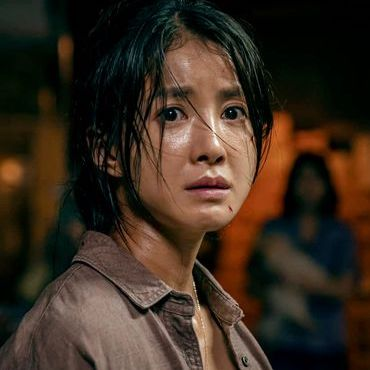
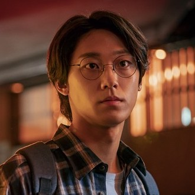
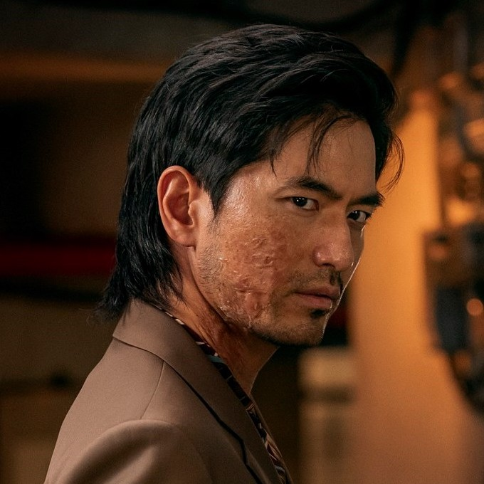
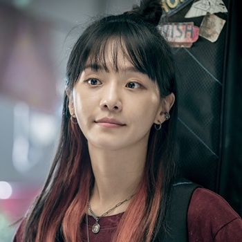
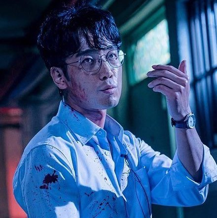
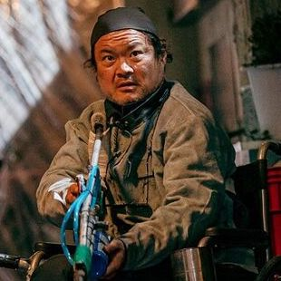

Title: Sweet Home / 스위트홈
Genre: Horror, Drama, Fantasy
Episodes: 10
Broadcast Network: Netflix
Release date: December 18, 2020
Director: Lee Eung-bok
Writer: Song Jae-jung
Following the death of his family in an accident, loner Cha Hyun Soo moves to a new apartment. His quiet life is soon disturbed by strange incidents that start occurring in his apartment, and throughout Korea. As people start to turn into monsters, Hyun Soo and the other residents try to survive.
Song Kang
as Cha Hyun-su

Lee Si-young
as Seo Yi-kyung

Lee Do-hyun
as Lee Eun-hyeok

Lee Jin-wook
as Pyeon Sang-wook
Go Min-si
as Lee Eun-yu

Park Gyu-young
as Yoon Ji-su

Kim Nam-hee
as Jung Jae-heon

Kim Sang-ho
as Han Du-sik